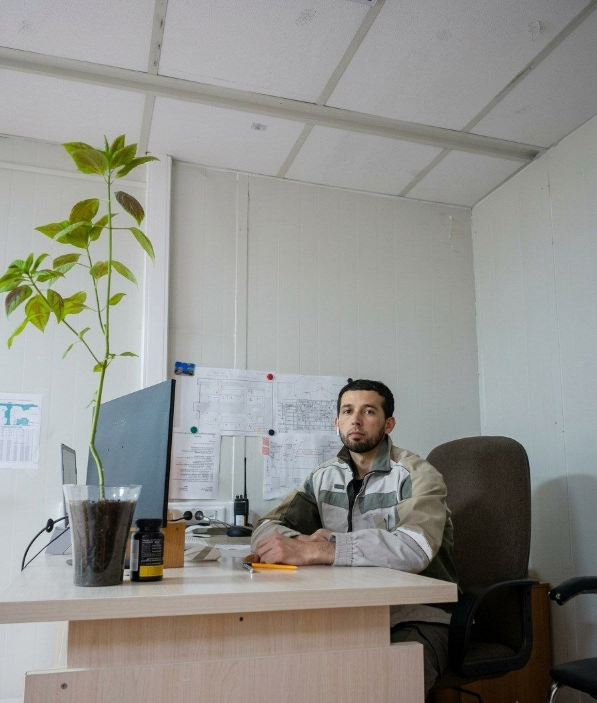

G'ofurjon Xamidov
Mutaxassisligim ekolog-muhandis. Bundan tashqari frontend dasturlash va moliya bozorlarida treyding yo'nalishlariga qattiq qiziqaman.
Ko'nikmalarim & Texnologiyalar:
Ekologiya / GreenTech
Moliya Bozori
Turk tili:B2
Word&Excell Pro
AI(Middle)
HTML5(Middle)
CSS3(Middle)
JavaScript (Basic)
Yutuqlar va Sertifikatlar:
🎓 Ekologiya bo'yicha Bakalavr diplomi
94/100
Mutaxassislik bo'yicha yuqori ko'rsatkichli diplom
📜 Turk tili milliy sertifikati
B2 daraja
Til bilish darajasi bo'yicha milliy sertifikat
📜 Excell Masters Bitiruvchisi
Excell PRO
Excell dasturida pro ishlash
🌱 Ekologik loyiha muallifi
2026
Chiqindilarni qayta ishlash va atrof-muhit muhofazasiga bag'ishlangan mahalliy loyiha
Rejam va maqsadlarim:
- Ekologiya sohasida foydali IT loyihalar yaratish
- Tabiatni asrashga texnologiyalar orqali hissa qo'shish
- Frontend bo'yicha bilimlarni chuqurlashtirib borish
Telegram orqali bog'lanish